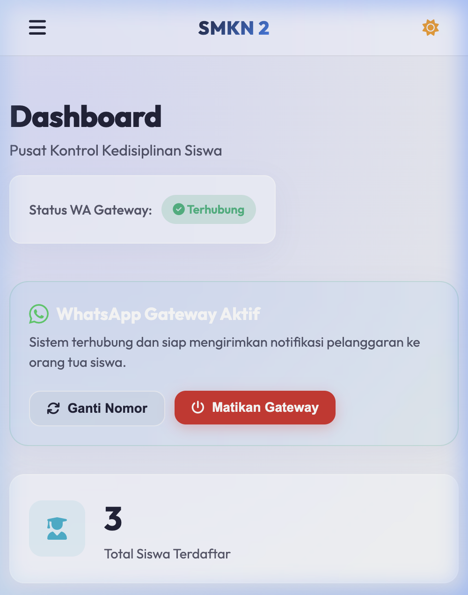
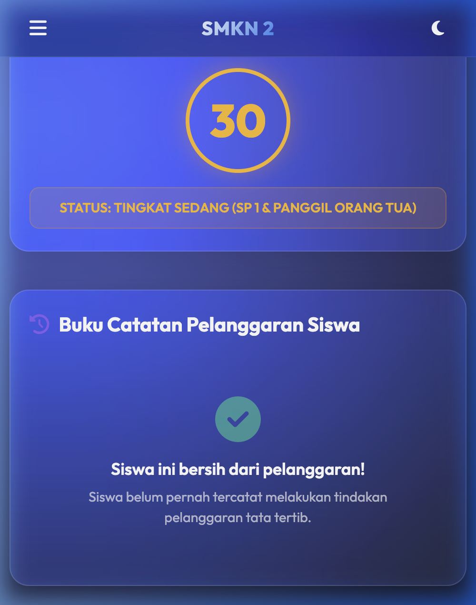

Aplikasi tata tertib sekolah digital dengan rekam poin pelanggaran, otomasi surat peringatan (SP), dan transparansi monitoring terintegrasi WhatsApp Gateway untuk Orang Tua.
Nama SIKAT dipilih tidak hanya sebagai singkatan dari Sistem Informasi Ketertiban & Aturan Sekolah, tetapi juga membawa simbolisme tindakan nyata:
Membersihkan dan merapikan kebiasaan indisipliner di sekolah untuk menciptakan iklim belajar yang sehat dan bebas dari pelanggaran.
Menegakkan aturan secara objektif dan terarah melalui akumulasi poin pembinaan, berfokus pada perbaikan bukan hukuman fisik semata.
Pencatatan pelanggaran fisik di buku BK rentan terselip, rusak, atau dimodifikasi oleh oknum yang tidak berwenang.
Orang tua seringkali baru mengetahui tindakan indisipliner anak setelah berminggu-minggu, mengurangi efek pembinaan preventif.
Wali Kelas tidak memiliki akses instan ke track record poin kedisiplinan siswanya sendiri tanpa bertanya ke staff BK.
Pembuatan draf surat panggilan dan Surat Peringatan (SP 1, SP 2, SP 3) dilakukan manual berulang kali, menyita waktu.
Database pelanggaran dan sanksi poin terpusat dan terenkripsi. Histori tidak dapat didelete sembarangan.
Begitu pelanggaran diinput, sistem mengirim notifikasi otomatis berisi detail jenis pelanggaran & akumulasi poin ke WA orang tua.
Template SP1, SP2, dan SP3 terisi data siswa secara otomatis dan siap dicetak/print dalam format resmi instan.

Menggunakan Laravel 10 sebagai inti backend yang handal, mengatur perizinan, routing, database ORM Eloquent, dan templating Blade.
Microservice Node.js berbasis Baileys library yang menangani session client WhatsApp lokal, scan QR Code, dan daemon pengiriman pesan.
Mengelola integritas data siswa, kelas, master pelanggaran, riwayat catatan pelanggaran (`violation_logs`), serta antrean pesan (`wa_queues`).
Dibuat menggunakan CSS modern bertema Glassmorphic premium (transparansi, backdrop-filter blur, transisi mulus, dan visualisasi Chart.js).
Pengiriman notifikasi dirancang asinkron menggunakan sistem antrean (**Queue-based**) untuk mencegah delay pemuatan saat input data dan memastikan pesan tidak hilang jika koneksi terputus sementara.
Guru BK menginput pelanggaran siswa di halaman web.
Pesan diformat & dimasukkan ke tabel `wa_queues` di DB.
Node.js server memantau database & memproses pesan antrean.
WhatsApp sampai di HP orang tua & status berubah jadi 'sent'.
Menampilkan naik-turunnya grafik akumulasi kasus per bulan untuk mendeteksi fluktuasi kedisiplinan.
Doughnut chart memperlihatkan proporsi pelanggaran Ringan, Sedang, dan Berat secara real-time.
Wali Kelas melihat daftar lengkap siswa di kelasnya dengan indikator poin, progress bar risiko (Aman / Perhatian / Kritis), dan tombol catat pelanggaran langsung.
Memfilter laporan berdasarkan Kelas, Rentang Tanggal Pelanggaran, dan input pencarian teks secara instan di layar.
Mengekspor data filter ke file spreadsheet (.xlsx) lengkap dengan format font dinas formal, lebar kolom otomatis, dan struktur rapi.
Surat SP 1 (≥25 pts), SP 2 (≥50 pts), dan SP 3/DO (≥75/100 pts) terisi data dinamis siswa dengan layout cetak printer A4 profesional.

| Fitur / Aksi | Super Admin | Guru BK | Wakil Kesiswaan | Wali Kelas | Guru |
|---|---|---|---|---|---|
| Kelola Jenis Pelanggaran & User | Ya | Tidak | Tidak | Tidak | Tidak |
| Catat Pelanggaran Siswa | Semua | Semua | Semua | Semua Siswa | Semua Siswa |
| Lihat Detail & Daftar Siswa | Semua | Semua | Semua | Kelas Sendiri | Tidak |
| Import Excel & Edit Data Siswa | Ya | Ya | Ya | Tidak | Tidak |
| Unduh Rekap Laporan & Cetak SP | Ya | Ya | Ya | Kelas Sendiri | Tidak |
| Cek Poin Mandiri (Tanpa Login) | Ya | Ya | Ya | Ya | Ya (via NIS) |
Hanya Super Admin yang dapat mengelola akun staff. Sistem mendukung 5 role akses yang berbeda sesuai tanggung jawab masing-masing.
Akses penuh, kelola user & sistem
Catat pelanggaran, laporan, cetak SP
Sama seperti Guru BK — rekap & laporan
Pantau kelas sendiri & Catat pelanggaran lintas kelas
Catat pelanggaran semua siswa — dashboard standar tanpa akses laporan
Role untuk semua guru mata pelajaran
Setara Guru BK — akses penuh kesiswaan
Super Admin kini dapat mengelola kelas (tambah, edit, hapus), memetakan jurusan, dan wali kelas melalui modal glassmorphic interaktif.
Wali Kelas kini dapat mencari dan mencatat pelanggaran untuk siswa dari kelas lain (bukan hanya kelas bimbingannya saja) untuk kolaborasi pengawasan kedisiplinan yang lebih baik.
Dilengkapi automated feature tests (KelasTest & ViolationLogTest) untuk menjamin alur CRUD kelas dan pembatasan lintas kelas berjalan sempurna.
Dengan terwujudnya digitalisasi tata tertib ini, penegakan kedisiplinan di SMKN 2 Jakarta menjadi lebih adil, transparan, objektif, dan responsif.